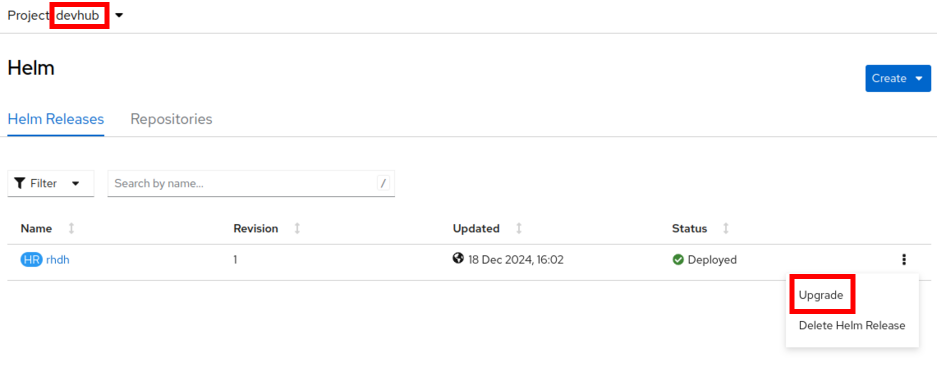
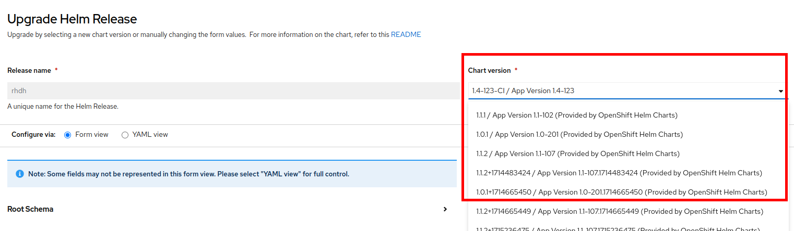

Upgrading Red Hat Developer Hub
Upgrading RHDH depends on your install method that you selected.
| Before you perform any updates to RHDH, ensure that you back up ALL the data in the RHDH PostreSQL database, plus any RHDH configuration stored in ConfigMaps and Secrets! |
Upgrading the RHDH Helm Chart
You can update RHDH using the OpenShift web console.
-
Ensure that you are in the Developer perspective of the OpenShift console. Click on
Helmto view the installed releases in theHelm Releasestab. -
Expand the hamburger menu on the right of the
rhdhrelease and clickUpgrade.Figure 1. Upgrade Helm Release -
In the
Upgrade Helm Releasepage, select the version of RHDH you want to upgrade to in theChart versiondrop-down. This list shows the different helm chart versions of RHDH that have been publicly released.Figure 2. Select Upgrade Version -
After you have selected a version for upgrade, click
Upgrade. Wait for 10-15 minutes while the resources in the older versions are deleted, and newer versions of the RHDH pod(s) are launched. -
Close all open RHDH web pages, and log in again to verify that the upgrade was successful.
Upgrading the RHDH Helm Chart using the CLI
You can update RHDH using the helm CLI.
-
Log in to the OpenShift cluster as the cluster administrator. Ensure that you switch to the devhub project.
$ oc login -u admin https://api.cluster-<your_guid>.dynamic.redhatworkshops.io:6443 $ oc project devhub -
Assuming there is a new version of the RHDH helm chart (for example, 1.4), run the following command to upgrade RHDH.
$ helm upgrade -i rhdh \ openshift-helm-charts/redhat-developer-hub --version 1.4.0 Release "rhdh" has been upgraded. Happy Helming! NAME: rhdh LAST DEPLOYED: Fri Jun 28 18:06:47 2024 NAMESPACE: devhub STATUS: deployed REVISION: 2You can also supply extra values to the chart by creating a new-values.yml file on your workstation with values that override the attributes in the installed chart, or add new attributes.
$ helm upgrade -i rhdh -f new-values.yml \ openshift-helm-charts/redhat-developer-hub --version 1.4.0
Upgrading the RHDH Operator using the OpenShift Web Console
The default setting during operator install is set to Automatic mode. In this mode, new versions of the operator are automatically downloaded and applied. If you chose the Manual mode, a cluster administrator needs to manually approve each upgrade. In such cases, switch to the Administrator perspective, and then click on Operators > Installed Operators to view the updates for the RHDH operator.
Click Upgrade Available for the RHDH operator, and then click Preview InstallPlan. Click Approve to approve the update.